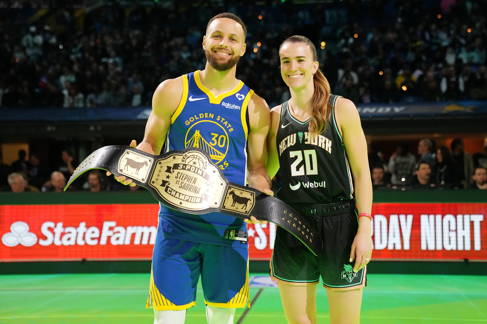

Jude Bellingham : La Nouvelle Étoile du Real Madrid
L'arrivée de Jude Bellingham au Real Madrid a immédiatement renforcé le milieu de terrain avec une présence jeune et dynamique. Sa première saison est une révélation; ses prouesses techniques, sa maturité en jeu et sa capacité à influencer le match dans les deux sens du terrain font déjà de lui un favori des fans du Bernabéu.
Le jeune Anglais n'est pas juste un espoir pour l'avenir, il est un pilier du présent de Madrid, une pièce maîtresse dans la quête du club pour les titres domestiques et européens. Avec Bellingham, le Real Madrid ne se contente pas de viser la grandeur, il la façonne match après match.
Super Bowl LVIII : Une Conquête Historique pour les Chiefs
La magie de Patrick Mahomes a encore opéré lors du Super Bowl LVIII, propulsant les Chiefs de Kansas City vers une victoire mémorable en prolongation. Avec ce troisième titre en cinq ans, les Chiefs consolident leur statut de dynastie dans l'univers du football américain. Audace tactique et performances de haut vol ont été au cœur de leur triomphe.
Transcription :
[Applause]
First and goal Mahomes. Flings it it's there
Hardman jackpot Kansas
City. And this was the Andy Reed
special this was the Andy Reed special.
We talked about he was saving all day
he's got a fake emotion to go
across and at that moment he turns and
goes back Hardman who they didn't have
Le Bitcoin et les Cryptos Grimpent en Flèche
Dans un tourbillon numérique, le Bitcoin conduit une nouvelle vague de gains pour les cryptomonnaies, surpassant les attentes des investisseurs et les prévisions des analystes. Alors que le marché évolue rapidement, la confiance dans les actifs numériques s'intensifie, signalant peut-être une nouvelle ère pour la finance personnelle et globale. Restez connectés pour des mises à jour sur cette ascension fulgurante des cryptos.
Succès Commercial de Ninho : Un Impact Majeur
Ninho, figure incontournable du rap français, a connu une ascension fulgurante marquée par des records de ventes impressionnants. Ses albums, notamment "Comme prévu", "Destin", et "Jefe", ont été massivement plébiscités, cumulant des certifications diamant. Ce succès témoigne de son talent à produire des hits résonnant bien au-delà des frontières de la France. Avec un nombre record de singles certifiés, Ninho s'est établi comme un pilier du rap francophone, illustrant parfaitement la rencontre entre qualité artistique et succès commercial.
Album
Année de sortie
Ventes en France
Son le + écouté
Certification
Comme prévu
2017
500,000
De l'autre côté (feat. Nekfeu)
Diamant
Destin
2019
800,000
La vie qu'on mène
Diamant
Jefe
2021
508,000
Jefe
Diamant
NI
2023
139,000
Eurostar (feat. Central Cee)
Platine
Le Face-à-Face Légendaire : Curry vs Ionescu au Concours de 3 Points
Stephen Curry et Sabrina Ionescu ont marqué l'histoire lors du NBA All-Star Saturday Night à Indianapolis avec un duel à 3 points captivant. Ionescu, étoile de la WNBA, a brillé dès le début, marquant 26 points, un record égalé pour le concours. Curry, légende et recordman à 3 points de la NBA, a répondu par une performance exceptionnelle de 29 points, s'adjugeant la victoire. Ce moment unique a non seulement souligné leur talent hors norme mais a également véhiculé un message fort sur l'égalité des genres dans le sport

Le Coup d'Envoi de la Saison F1 2024
La saison F1 2024 s'annonce captivante dès le départ avec le Grand Prix de Bahreïn, marquant le début d'un calendrier riche de 24 courses. Les fans pourront assister à un retour en Chine et suivre des courses dans des lieux emblématiques comme le Circuit de Spa-Francorchamps en Belgique. Max Verstappen, triple champion en titre, cherchera à étendre sa domination, tandis que les équipes comme Mercedes, McLaren et Ferrari viseront à défier la suprématie de Red Bull. Un programme complet et des enjeux élevés promettent une saison mémorable